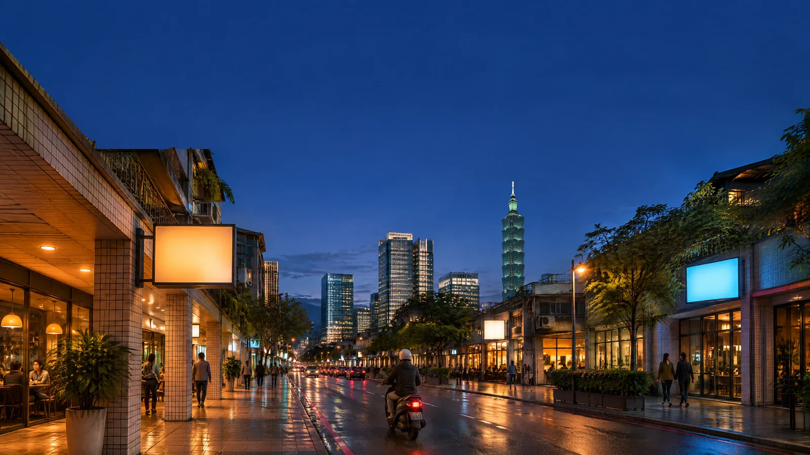
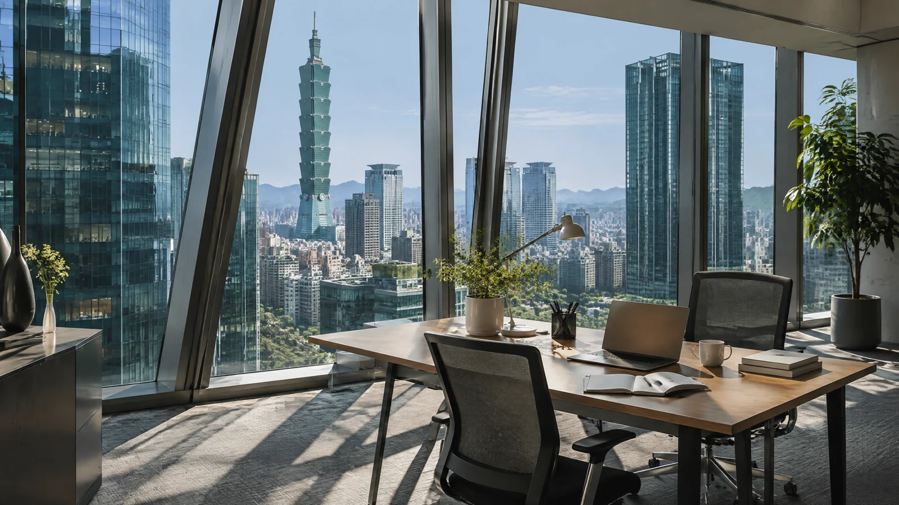

決策之城 Decision City 2018–2026 九本年鑑 × 台北信義區 3D 代理商生存遊戲
選一個代理商職能，騎車在 2026 台北信義區過完一個工作天，一天走過九年《決策智慧》。不用安裝、不用登入，手機與桌機打開網址就能玩。
參賽者：蔡政霖 Lewis Tsai（DSC）｜提示：使用鍵盤 ← → 或下方按鈕換頁

把 785 頁年度趨勢報告，變成「玩完就記得三年洞察」的城市現場
原本的閱讀門檻
- 份量龐大：2018–2026 九本《決策智慧》合計約 785 頁，內容紮實但能從頭讀完的人少。
- 脈絡斷裂：新人訓與客戶很難在短時間內看懂「九年來行銷決策到底怎麼變」。
- 缺少體感：只看報告摘要容易流於背口號，難以理解預算、品牌與客戶信任之間的真實取捨。
我們的設計解法
- 一天走過九年：08:30 捷運戶外看板（2018）一路跑到 21:00 Agentic 時代加班夜（2026）。
- 每個現場都有代價：沒有「全錯選項」，三選一抉擇後立即對照「書中依據」與年鑑原意。
- 15–25 分鐘一輪：破關拿到九張年鑑圖鑑與成績單，還可用「年度選擇」重玩補支線。
九年主題 × 六大職能 × 台灣街頭味，忠於原著又好讀好玩
1. 六種代理商職能，各有專屬劇本與加成
業務 AE、策略企劃、媒體企劃、創意、數據分析師、CX／電商顧問——同一場會議，不同職能看到的對話、提示與數值加成都不一樣。
2. 四項真實指標：品牌力・業績・客戶信任・肝指數
問答與抉擇拉扯長短期績效；肝指數衝到 100 會強制帶去「吳興街熱炒」收工結算，去「彩虹河濱公園」或「巷口早餐店」才能喘口氣。
3. 彩蛋「阿嬤模組」與長輩圖生成器
標題輸入 AMA 或去福德街土地公廟拜三次解鎖：換騎電動代步車（車流禮讓）、暖色濾鏡、第 4 個長輩生活經驗選項，還能挑年鑑金句做成早安長輩圖下載分享。

15 個信義區真實／諧音地標：富幫 A25、台北一洞么、鬆山文創、大巨旦、思思南村柑仔店、拎薑街夜市⋯⋯搭配九個年代電台跑馬燈與 108 題實戰題庫。
桌機鍵盤與手機觸控雙模式，簡單三個動作就能跑完整座城
基本操作（含 60 秒新手互動教學）
| 操作 | 桌機鍵盤 | 手機觸控 |
|---|---|---|
| 移動轉向 | ↑↓←→ 或 WASD | 左下角虛擬搖桿 |
| 萬用動作鍵 | Space / Enter / E | 右下角大顆動作按鈕 |
| 自動前往 | G（沿路網導航到任務點） | 動作鍵旁小按鈕 |
| 上下車 / 步行 | F（停門前也會自動下車） | 車型 / 步行切換鈕 |
| 飛天電動車 | T（升空巡航越過車流） | 飛天車按鈕 |
| 大地圖 / 選單 | M 大地圖・Esc 選單 | 點小地圖・點 ☰ 選單 |
為什麼鼓勵「自己騎」？
- 準時獎勵：限時任務全程自己騎並在倒數內抵達，客戶信任 +2（剩一半以上時間 +3）；使用自動前往則無。
- 路邊靈感 ✦：路上散落數十個靈感點，騎車經過自動收集進提案附錄，每 5 個品牌力 +1。
卡關保護與三語切換
- 撞車或撞牆只會輕微減速震動，不會死亡卡死。
- 選單隨時提供「回到路上」脫困、中／英／日三語切換、音量獨立調整與結局分享圖下載。
規格契約先行的多代理工廠：4 個平行分支 × 4 類生成式 AI 工具
讀書與定契約
9 個 Claude 子代理先拆讀九本書出摘要與 108 題題庫；撰寫 PRD.md 與 CONTRACTS.md 鎖定資料與引擎介面。
Codex 寫 3D 城
Three.js + OpenStreetMap 真實信義區路網：車道方向、紅綠燈、雙向斑馬線、小地圖、日夜雨天、飛天車高空導航與 2D 備援。
Claude 做系統
純原生 ES Modules 狀態機、六職能各自劇本、89 個支線任務、長輩圖 Canvas 生成器、Web Audio 音效與無障礙響應式介面。
多模態 AI 素材
gpt-image 2.6 產寫實劇照與 3D 寫實載具、Higgsfield 產 6 支過場影片、Gemini TTS＋VoAI 產 4,836 段三語配音。
關鍵工程紀律： 四個分支寫入範圍互斥，遊戲層先用 mock-engine.js 獨立開發，再接上真 Three.js 引擎並進行自動化全流程實機回歸測試（6 職能 × 9 任務 × 三語掃描）。
從「第一版 2D 展示品」到「陌生玩家真機能玩 20 分鐘的 3D 產品」
轉向一：視覺與維度升級
原採插畫與俯視 2D，檢視後下令重做為電影感寫實劇照＋3D 第三人稱信義區，並以「台灣日常質感」（磨石子、小口磚、郵局綠路牌、鐵窗花）取代一般科技感介面。
轉向二：上線前缺口盤點
盤點「玩家為什麼會在第一分鐘離開」：把人物移動改成以角色視角轉向、加 60 秒晨會路上教學、全地點門洞碰撞、4G 載入從 25.1 秒壓到 11.7–14.1 秒。
轉向三：真機驗證與除錯
修正 763 個路口箭頭、1,254 根號誌燈桿位置、汽車自動導航沿用偏好、飛天車遇高樓改高空巡航並用三語提示被擋原因，並做雙向道斑馬線對齊。
tests/evidence/）與真機試玩，一輪輪把卡住玩家的細節修掉。
純靜態零後端部署 × 私有／公開雙庫隔離，從根源杜絕金鑰與原文外洩
1. 放哪裡＆為什麼
- GitHub Pages 靜態託管：
mela0976.github.io/decision-city-play/ - 零框架零打包工具：純 HTML + CSS + ES Modules，Three.js 與音圖資全數自架於同站，開啟即玩、不需維護伺服器。
2. 後端與隱私設計
- 無後端、無資料庫：沒有會員註冊、沒有登入牆、沒有第三方追蹤碼（Analytics）。
- 純本機存檔：進度、設定與語音狀態只寫在玩家自己的
localStorage，不蒐集任何個人資料。
3. 資安與版權檢查項目
- 雙倉庫隔離：年鑑 PDF、InDesign 與設計文件留在私有庫；
publish.sh只同步執行期靜態檔案至公開庫。 - 金鑰零內嵌：語音在離線建置時先預錄成 MP3；發布腳本每次推送前自動掃描
AIza...等 API 金鑰，並確認無客戶機密或帳密。
一天走過九年，《決策之城》等你上車
所有內容取自 2018–2026 九本《決策智慧》，並加上真實代理商的日常掙扎與台灣味彩蛋。試試輸入 AMA 召喚台灣阿嬤一起跑業務！
作品網址： https://mela0976.github.io/decision-city-play/
聯絡人： 蔡政霖 Lewis Tsai（DSC）｜ lewis.tsai@dentsu.com